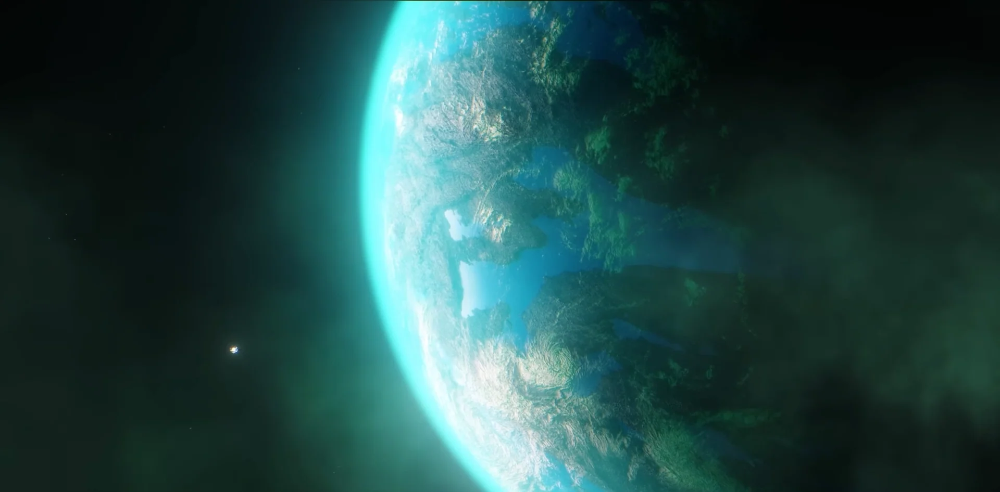

Evren 93 milyar ışık yılı genişliğinde ve yaklaşık 2 trilyon galaksi içeriyor. Bu sayıları göz önüne aldığımızda “Başka yaşam var mı?” sorusu anlamsızlaşır; asıl soru şu hâle gelir: “En yakın yaşanabilir gezegen nerede ve oraya nasıl gideriz?”
NASA’nın Kepler ve TESS uzay teleskopları sayesinde 5.000’den fazla öte gezegen (exoplanet) keşfettik. Bunların yüzlercesi yaşanabilir bölgede yer alıyor. Ancak bir gezegenin yaşanabilir olması, üzerinde yaşam olduğu anlamına gelmez; bu bölge yalnızca suyun sıvı hâlde var olabileceği sıcaklık aralığına işaret eder.
Yaşanabilir Bölge (Goldilocks Zone) Nedir?
“Ne çok sıcak ne çok soğuk” ilkesiyle tanımlanan yaşanabilir bölge (habitable zone ya da Goldilocks Zone), bir gezegenin yüzeyinde sıvı suyun varlığına izin veren yıldız-gezegen mesafe aralığıdır. Güneş Sistemi’nde bu bölge yaklaşık 0,95 ile 1,67 AU (astronomi birimi) arasında yer alır; Dünya 1 AU mesafededir.
Yaşanabilirlik yalnızca mesafeyle belirlenmez. Gezegenin atmosferi, manyetik alanı, jeolojik aktivitesi ve yıldızından aldığı ultraviyole radyasyon da belirleyicidir. Mars, yaşanabilir bölge sınırındadır; ancak ince atmosferi ve zayıf manyetik alanı nedeniyle yüzeyinde sıvı su tutamamaktadır.
Kepler Uzay Teleskobu: Öte Gezegen Avının Öncüsü
NASA’nın 2009 yılında fırlattığı Kepler Uzay Teleskobu, bilim tarihinin en verimli öte gezegen avcısıydı. 2018 yılında yakıtı bitmeden önce, Samanyolu’nun küçük bir diliminde 2.662 doğrulanmış öte gezegen keşfetti. Kepler’in yöntemi, transit fotometri olarak bilinir: Bir gezegen yıldızının önünden geçtiğinde yıldızın parlaklığında gözlenen küçük düşüşler kaydedilir. Bu küçülme gezegeni ele verir.
Kepler’in en önemli keşiflerinden biri Kepler-452b’dir. “Dünya’nın büyük kuzeni” olarak da bilinen bu gezegen, Güneş’e benzer bir yıldızın (G tipi) yaşanabilir bölgesinde yörünge çizmektedir. Dünya’dan 1.400 ışık yılı uzaktadır; Dünya’nın 1,6 katı büyüklüğündedir ve bir yılı Dünya yılına yakın, 385 gündür. Atmosfer bileşimi henüz bilinmemektedir.
“Kepler, ilk öte gezegen haritasını çıkardı. TESS ise bu haritanın detaylarını dolduruyor. Asıl iş, James Webb Uzay Teleskobu ile başlıyor.” — Sara Seager, MIT Öte Gezegen Bilimcisi
TRAPPIST-1 Sistemi: Yedi Gezegenli Mucize
2017 yılında NASA ve ESO’nun ortak açıklamasıyla dünyaya tanıtılan TRAPPIST-1 sistemi, 39 ışık yılı uzaklıkta yedisi de Dünya büyüklüğünde gezegen barındıran bir ultra-soğuk cüce yıldız (M tipi) sistemidir. Bu yedi gezegenin üçü (TRAPPIST-1e, f ve g) kesin yaşanabilir bölgede yer almaktadır.
TRAPPIST-1e, en umut verici adaydır. Yoğunluğu Dünya’ya yakındır ve yüzeyinde su tutma olasılığı en yüksek gezegen olarak değerlendirilir. Ancak M tipi yıldızlar güçlü flare (parlaması) aktivitesi gösterir; bu radyasyon bir gezegenin atmosferini aşındırabilir. James Webb Uzay Teleskobu, 2024–2025 gözlem sezonu boyunca TRAPPIST-1 gezegenlerinin atmosfer spektrumlarını incelemiştir; sonuçlar bilim dünyasında hâlâ tartışılmaktadır.
Alpha Centauri ve Proxima Centauri b: En Yakın Komşumuz
Alpha Centauri sistemi, Güneş’e en yakın yıldız sistemidir: 4,37 ışık yılı uzakta. Sistem üç yıldızdan oluşur: Alpha Centauri A, Alpha Centauri B ve onlardan biraz daha uzakta yer alan Proxima Centauri (4,24 ışık yılı). 2016 yılında ESO gozlemevi, Proxima Centauri’nin yaşanabilir bölgesinde bir gezegen keşfettiğini açıkladı: Proxima Centauri b.
Bu gezegen Dünya’nın 1,17 katı kütlesinde ve yıldızına son derece yakın (0,0485 AU) yörünge çizmektedir. Yıldızını 11,2 günde bir dolaşır. Proxima Centauri de bir M cücesi olduğundan yoğun flare radyasyonu sorun teşkil eder. 2021 yılında Alpha Centauri sisteminde kızılötesi taramalarla Neptün büyüklüğünde bir gezegen adayı (Alpha Centauri Ab) tespit edilmiştir; ancak doğrulama çalışmaları sürmektedir.
Breakthrough Starshot: Işığa Yolculuk
Mevcut en hızlı uzay aracımız olan New Horizons, saniyede yaklaşık 14 km hızla ilerliyor. Bu hızla Alpha Centauri’ye ulaşmak yaklaşık 75.000 yıl sürerdi.
Stephen Hawking ve Yuri Milner’in desteklediği Breakthrough Starshot Projesi (2016), gram ağırlığında küçük “Nanocraft”ları güçlü lazer ışınlarıyla ışık hızının yüzde yirmisine (%20c) ivmelendirmeyi hedefliyor. Bu hızla Proxima Centauri’ye ulaşma süresi yaklaşık 20 yıl. Bununla birlikte yavaşlama mekanizması ve Nanocraft boyutundaki bir araca bilimsel ekipman sığdırma sorunu henüz çözüme kavuşturulmamıştır.
Mars: Yıldızlara Giden Yolda İlk Durak
Uzak yıldız sistemlerine yapılan yolculuktan önce insanlığın en yakın önceliği Mars’tır. NASA’nın Artemis programı Ay üssü kurulmasını hedeflerken, SpaceX’in Starship aracı Mars’a insan götürmeyi 2030’ların ortasına planlamaktadır. ESA ve Çin Ulusal Uzay İdaresi de bağımsız Mars misyonları üzerinde çalışmaktadır.
Mars’ta yerleşim için temel gereksinimler: Yer altı ya da lav tüpü barınakları (radyasyona karşı), nükleer enerji veya güneş çiftlikleri, CO₂ atmosferinden oksijen üretimi (MOXIE teknolojisi, Perseverance ile test edilmiştir), su buz kaynaklarının işlenmesi ve dikey tarım sistemleri. Öymsüt ül senaryolara göre 2040’lı yıllarda ilk kalıcı Mars üssü kurulabilir.
James Webb Uzay Teleskobu: Atmosferlerin Peşinde
2021’de fırlatılan James Webb Uzay Teleskobu (JWST), öte gezegen araştırmalarını yeni bir çağa taşıdı. JWST, bir gezegenin yıldızının önünden geçerken atmosfer katmanlarından süzülen ışığı spektroskopik olarak analiz edebiliyor. Bu yöntemle su buharı, karbondioksit, metan ve hatta oksijen gibi biyoişaretçilerin (biosignatures) tespiti mümkün hâle geldi.
2023 yılında K2-18b gezegeninde dimetil sülfür (DMS) adlı molekülün zayıf izleri saptandı. Dünya’da DMS yalnızca canlı organizmalar tarafından üretilir; ancak bilim insanları bu bulgunun abiyotik (cansız) süreçlerle de açıklanabileceğini vurgulayarak kesin bir yaşam iddiasından kaçınıyor. Veriler 2025 itibarıyla hâlâ değerlendirilmektedir.
Sonuç: Gidecek miyiz?
Bugün için gerçekçi cevap şudur: Yaşanabilir gezegenler mevcut, ulaşım teknolojimiz ise henüz çok yetersiz. En iyimser tahminlerle Proxima Centauri b’ye insanlı yolculuk, 22. yüzyılın mühendislik başarısı olabilir. TRAPPIST-1’e ise çok daha uzun bir zaman dilimi gerekmektedir.
Ama insanlığın tarihinde bu türden “erişilmez” hedefler hiçbir zaman insanı durdurmamıştır. Okyanusları aşmak imkânsız görünüyordu; kıtalar keşfedildi. Yerceşimini yenmek saçmaydı; uzaya çıkıldı. Yıldızlara uzanmak, belki insanlığın en büyük macerası olacak. Ve bu macera şimdiden başlamış durumda.